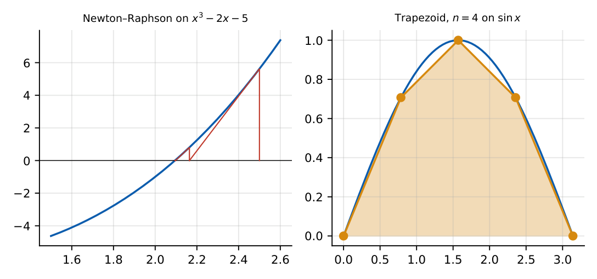

Numerical Methods
In this chapter
One or two iterations of bisection and Newton–Raphson, trapezoidal and Simpson integration on a few points, Euler/RK2 steps for an ODE, and error-order statements. Calculators are not allowed, so the numbers are chosen to be small.
7.1 Root finding
7.1.1 Bisection
If \(f\) is continuous and \(f(a)f(b)<0\), a root lies in \((a,b)\). Set \(c=\frac{a+b}2\) and keep the half in which the sign change persists. After \(n\) steps the interval is \((b-a)/2^n\), so reaching tolerance \(\varepsilon\) needs \(n\ge\log_2\frac{b-a}\varepsilon\). Convergence is linear and guaranteed.
7.1.2 Newton–Raphson
\(x_{n+1}=x_n-\dfrac{f(x_n)}{f'(x_n)}\). Convergence is quadratic near a simple root (\(e_{n+1}\approx\frac{f''}{2f'}e_n^2\)) but needs a good start and \(f'\ne0\).
Square root: \(x_{n+1}=\frac12\big(x_n+\frac a{x_n}\big)\). Reciprocal: \(x_{n+1}=x_n(2-ax_n)\). The secant method uses \(f'\approx\frac{f(x_n)-f(x_{n-1})}{x_n-x_{n-1}}\) (order \(\approx1.618\)); regula falsi keeps a bracket.

\(f=x^2-5\), \(x_0=2\): \(x_1=2-\frac{4-5}{4}=2.25\), \(x_2=2.25-\frac{0.0625}{4.5}=2.2361\). For \(x^3-2x-5\) from \(x_0=2.5\) the iterates are \(2.164\), \(2.097\), \(2.0946\), matching the figure.
7.2 Numerical integration
With \(n\) sub-intervals of width \(h=\frac{b-a}n\) and \(y_i=f(a+ih)\):
Trapezoidal: \(\int_a^bf\approx\frac h2\big[y_0+2(y_1+\cdots+y_{n-1})+y_n\big]\); error \(=-\frac{(b-a)h^2}{12}f''(\xi)\), exact for straight lines.
Simpson 1/3: \(\frac h3\big[y_0+4(y_1+y_3+\cdots)+2(y_2+y_4+\cdots)+y_n\big]\), \(n\) even; error \(-\frac{(b-a)h^4}{180}f^{(4)}(\xi)\); exact for polynomials up to degree 3.
Simpson 3/8: \(\frac{3h}8\big[y_0+3y_1+3y_2+2y_3+\cdots+y_n\big]\), \(n\) a multiple of 3; also exact up to degree 3.
\(\int_0^2x^2dx\) with \(h=1\): trapezoid \(\frac12(0+2\cdot1+4)=3\) (exact \(\frac83\), overestimates since \(f''>0\)); Simpson \(\frac13(0+4+4)=\frac83\) exact.
7.3 Numerical solution of ODEs
For \(y'=f(x,y)\), \(y(x_0)=y_0\), step \(h\):
Euler: \(y_{n+1}=y_n+hf(x_n,y_n)\); local error \(O(h^2)\), global \(O(h)\).
Modified Euler / Heun (RK2): \(k_1=f(x_n,y_n)\), \(k_2=f(x_n+h,y_n+hk_1)\), \(y_{n+1}=y_n+\frac h2(k_1+k_2)\); global error \(O(h^2)\).
RK4: \(y_{n+1}=y_n+\frac h6(k_1+2k_2+2k_3+k_4)\), \(k_2=f(x_n+\frac h2,y_n+\frac h2k_1)\), \(k_3=f(x_n+\frac h2,y_n+\frac h2k_2)\), \(k_4=f(x_n+h,y_n+hk_3)\); global error \(O(h^4)\).
Stability: explicit Euler on \(y'=-\lambda y\) is stable only for \(h<2/\lambda\).
(i) Bisection requires a sign change, not merely a root. (ii) Newton fails if \(f'(x_n)=0\) and may diverge for poor starting points. (iii) Simpson’s 1/3 rule needs an even number of intervals. (iv) The trapezoidal rule overestimates for convex \(f\). (v) Euler’s local and global errors differ by one power of \(h\).
In a bisection question just halve the interval and check the sign at the midpoint. For Newton on \(x^2-a\) use the averaging form. For integration list \(y_0,\dots,y_n\) first and apply the weights \(1,2,\dots,2,1\) (trapezoid) or \(1,4,2,\dots,4,1\) (Simpson). Check whether the integrand is a polynomial of degree \(\le3\): Simpson is then exact.
7.4 GATE problems
Q1. One Newton–Raphson step for \(f(x)=x^2-2\) from \(x_0=1\) gives (A) 1.25 (B) 1.5 (C) 1.4 (D) 2.
Q2. Trapezoidal rule with \(h=1\) for \(\int_0^2x^2dx\) gives (A) \(8/3\) (B) 3 (C) 4 (D) 2.
Q3. Simpson’s 1/3 rule for \(\int_0^2x^2dx\) with \(h=1\) gives (A) \(8/3\) (B) 3 (C) 4 (D) 2.
Q4. The minimum number of bisection steps on \([0,1]\) to guarantee error \(<10^{-3}\) is (A) 7 (B) 9 (C) 10 (D) 100.
Answers: Q1 (B): \(1-\frac{-1}2=1.5\). Q2 (B). Q3 (A). Q4 (C): \(2^{10}=1024>1000\).
Q5. Newton–Raphson on \(x^2-5\) from \(x_0=2\) gives \(x_1=\) (A) 2.25 (B) 2.5 (C) 2.1 (D) 2.0625.
Q6. Euler’s method with \(h=0.1\) for \(y'=x+y\), \(y(0)=1\) gives \(y(0.2)=\) (A) 1.2 (B) 1.22 (C) 1.24 (D) 1.21.
Q7. \(\int_0^1\frac{dx}{1+x^2}\) by Simpson’s 1/3 rule with \(h=0.5\) is (A) 0.775 (B) 0.7833 (C) 0.7854 (D) 0.8.
Answers: Q5 (A). Q6 (B): \(y_1=1.1\), \(y_2=1.1+0.1(0.1+1.1)=1.22\). Q7 (B): \(\frac{0.5}3(1+4\cdot0.8+0.5)=0.7833\) (exact \(\pi/4=0.7854\)).
Q8. Root of \(x^3-x-1\) in \([1,2]\) by bisection: the midpoint of the interval after two steps (value of the second midpoint) is .
Q9. Simpson’s 1/3 rule with \(h=0.5\) for \(\int_0^2x^3dx\) gives .
Q10. Heun (RK2) for \(y'=y\), \(y(0)=1\), \(h=0.1\): \(y(0.1)=\) (three decimals).
Answers: Q8: \(f(1.5)=0.875>0\), interval \([1,1.5]\), second midpoint \(1.25\). Q9: \(\frac{0.5}3[0+4(0.125)+2(1)+4(3.375)+8]=4\) (exact). Q10: \(1+0.05(1+1.1)=1.105\).
Q11. Which are true? (A) Simpson’s 1/3 is exact for cubics (B) it needs an even number of sub-intervals (C) the trapezoidal rule is exact for linear functions (D) Newton–Raphson always converges.
Answers: Q11: (A), (B), (C).
T1. Order of convergence of Newton–Raphson? T2. Global error order of RK4? T3. Stability limit of Euler for \(y'=-5y\)?
Answers: T1: quadratic. T2: \(O(h^4)\). T3: \(h<2/5=0.4\).
- Bisection: halves interval, \(n\ge\log_2\frac{b-a}\varepsilon\); Newton: \(x-\frac f{f'}\), quadratic.
- Trapezoid weights \(1,2,\dots,2,1\); Simpson \(1,4,2,\dots,4,1\), \(n\) even, exact to cubics.
- Euler \(O(h)\), Heun \(O(h^2)\), RK4 \(O(h^4)\) global.
- Euler stability \(h<2/\lambda\).